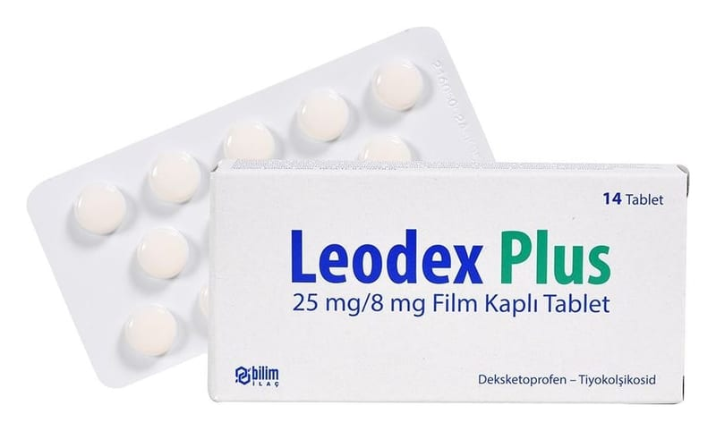

Leodex Plus 25 mg/8 mg Film Kaplı Tablet, Tablet, 14 Adet

Ne için kullanılır
KT · Bölüm 1LEODEX PLUS, etkin madde olarak deksketoprofen ve tiyokolşikosid içerir.
LEODEX PLUS içeriğindeki deksketoprofen trometamol S-(+)-2- (3-benzoilfenil) propiyonik asidin trometamin tuzu, steroid olmayan iltihap giderici ilaçlar (non-steroid antiinflamatuvar ilaçlar: NSAİİ) grubuna dahil ağrı kesici, iltihap giderici ve ateş düşürücü bir ilaçtır. LEODEX PLUS içeriğindeki tiyokolşikosid, esas olarak kas gevşetici etkinliğe sahiptir. Tiyokolşikosid, ağrılı kas spazmları ile ilişkili semptomların (hastalık belirtilerinin) tedavisinde kullanılır.
LEODEX PLUS, sarı renkli, iki tarafı düz, yuvarlak, bikonveks film kaplı tablettir. 10 ve 14 film kaplı tablet içeren blisterlerde sunulmaktadır. LEODEX PLUS, osteoartrit (kireçlenme), vertebral kolonun ağrılı sendromları, eklem dışı romatizma, ağrılı kas kasılmalarının semptomatik tedavisinde, ameliyat sonrasında oluşan ağrının tedavisinde kullanılır.